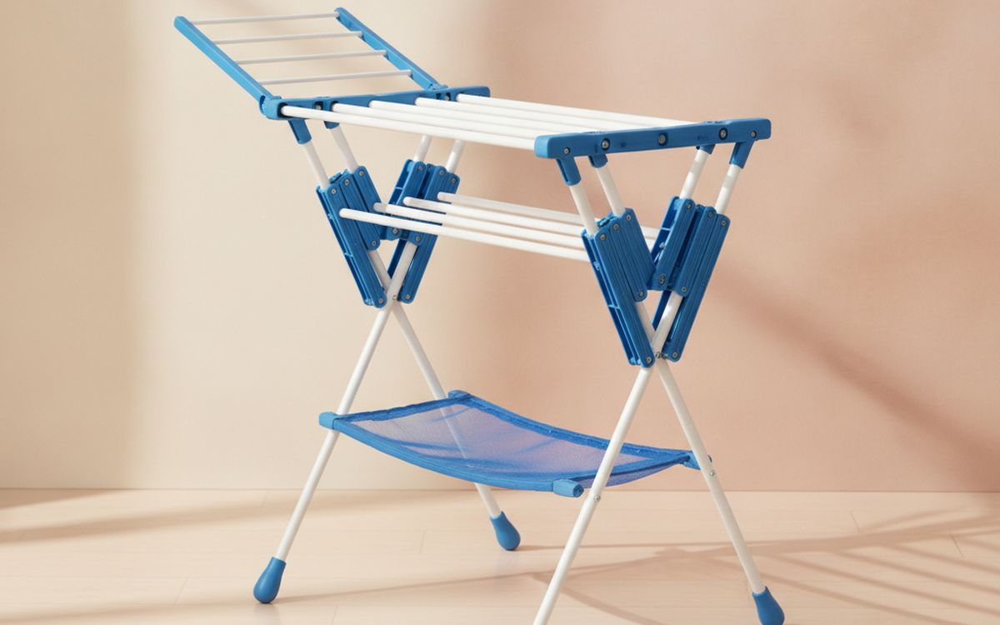
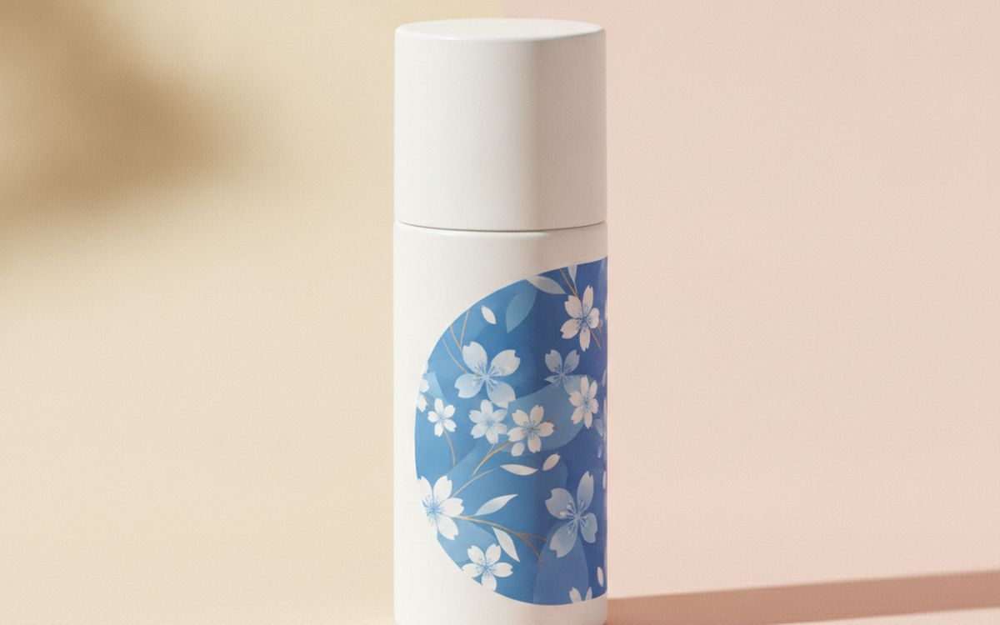
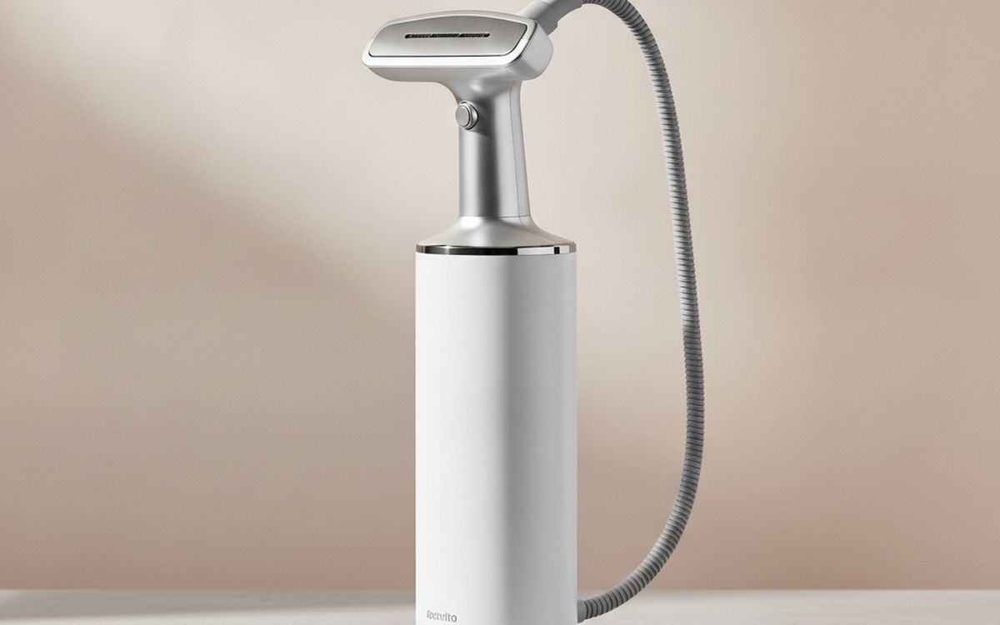
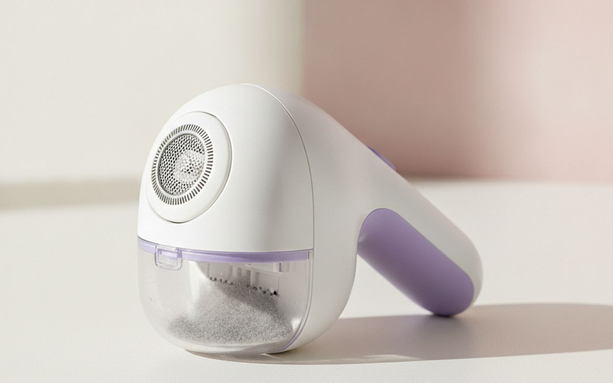
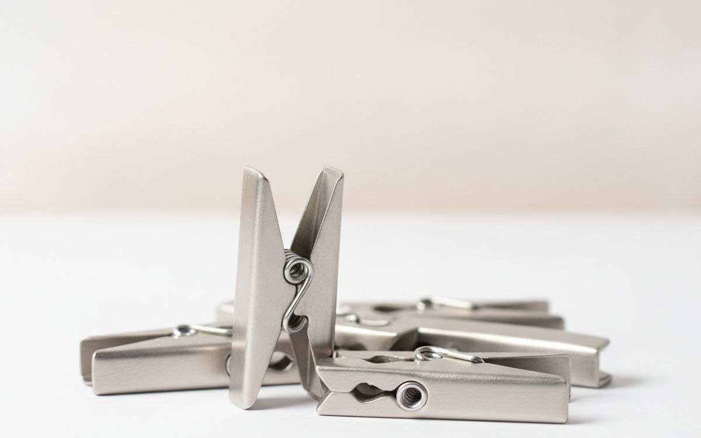
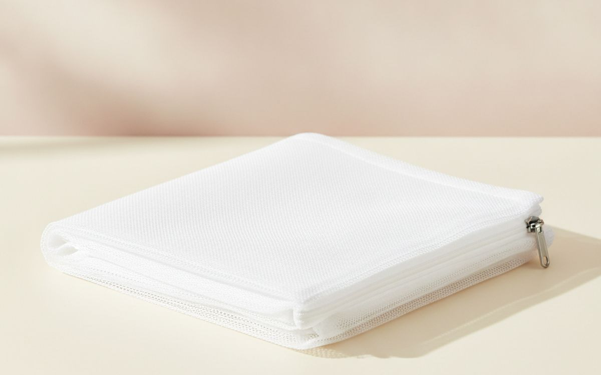
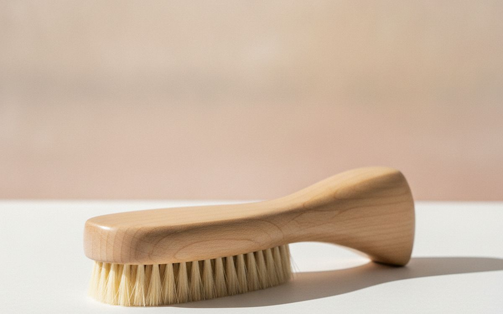
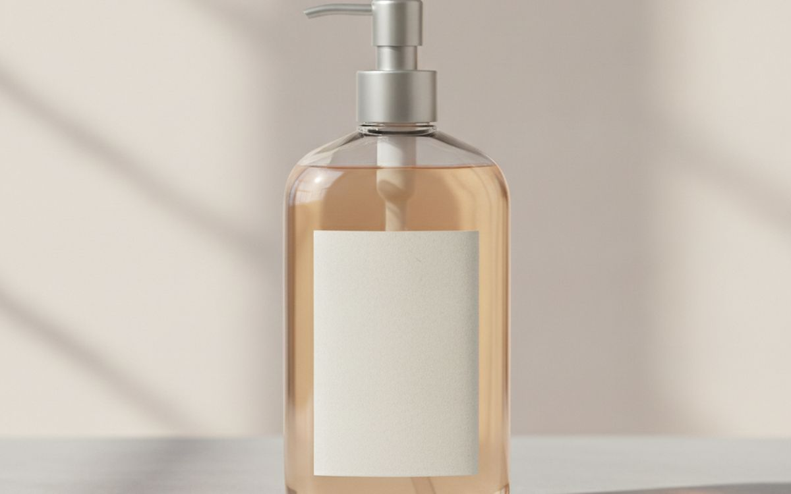
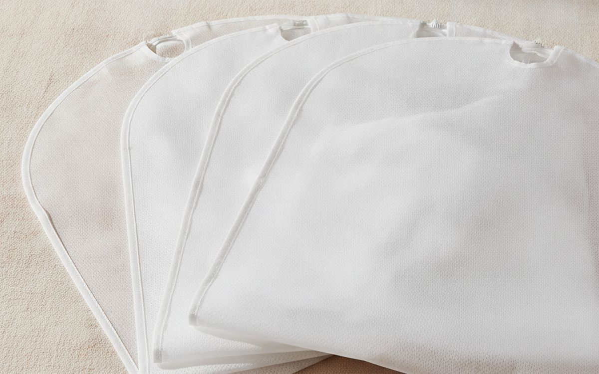

Most of us want our clothes to last. The goal is to avoid shrinking, fading, pilling, or general wear that forces replacement. But the laundry aisle is full of products claiming to solve these issues, often with complicated instructions or dubious benefits. It is easy to spend money on things that do not make a real difference, or worse, cause more problems than they solve.
The trap is thinking more products mean better care. Often, simple, well-chosen tools and consistent habits are what truly extend garment life. This guide focuses on items that offer tangible benefits for drying, stain removal, and protective storage. It avoids fads and highlights practical solutions, along with their actual limitations, so you can make informed decisions.
The short version
Leifheit Pegasus 180 Maxx Drying Rack
Air-drying most laundry
Disclosure. The links on this page are affiliate links. If you buy through one we may earn a commission at no extra cost to you. It does not affect what makes this list or the order it is in.
How we picked
Our recommendations come from researching product categories, understanding common failure points, and identifying well-regarded items. We look for durability, effectiveness, and a clear purpose. We do not perform hands-on testing of these products. Instead, we rely on publicly available information about how these tools are constructed and what they are designed to do. The aim is to suggest items that reliably perform their stated function without unnecessary complexity or marketing hype.
At a glance
Prices are approximate at the time of writing and change often.
The picks

01 · Air-drying most laundryLeifheit Pegasus 180 Maxx Drying Rack
Air drying is often the simplest and most effective way to extend the life of many garments, preventing damage from heat and agitation. The Leifheit Pegasus 180 Maxx provides substantial drying space, with a total line length of over 59 feet, including two extra bars for hangers. Its side wings are tall enough for longer items, reducing the need for folding. The sturdy frame is made from powder-coated steel, which resists rust. It folds down to a flat profile for storage, making it suitable for smaller spaces where a dedicated laundry room is not an option. This rack is designed for stability, even when loaded with wet clothes, a common failing of cheaper alternatives.
$80-120Trade-off: Takes up significant floor space when in use
Why it is here
- Large capacity for diverse items
- Stable and durable construction
- Folds flat for easy storage
Worth knowing
- Takes up significant floor space when in use
- Higher cost than basic racks

02 · Effective on many stainsGrandma's Secret Spot Remover
Stain removal is critical for saving clothes. Many general detergents struggle with set-in stains or specific types of discoloration. Grandma's Secret Spot Remover is a concentrated liquid designed to tackle a wide range of common stains, from grease and oil to blood and grass. It works by breaking down the stain, allowing it to be rinsed away. Its strength means a small amount often suffices. For best results, apply it directly to the stain as soon as possible, let it sit, and then wash as usual. It is generally safe for most washable fabrics, but a patch test on an inconspicuous area is always a sensible precaution before full application.
$10-15Trade-off: May require multiple applications for older stains
Why it is here
- Highly concentrated formula
- Effective on a wide variety of stains
- Small bottle lasts a long time
Worth knowing
- May require multiple applications for older stains
- Not effective on every single stain type

03 · Quick wrinkle removalConair GS88 ExtremeSteam Professional Fabric Steamer
A garment steamer offers a gentler way to remove wrinkles than an iron, which applies direct heat and pressure that can damage delicate fibers over time. The Conair GS88 heats up quickly and produces continuous steam, making it suitable for refreshing clothes daily. It has a large water tank for extended use and various attachments for different fabrics. Steamers work by relaxing fabric fibers, allowing wrinkles to fall out. This process is less abrasive than ironing, which can flatten and stretch fibers. While it excels at quick touch-ups and delicates, it does not provide the crisp, pressed look an iron achieves on structured garments like dress shirts or trousers.
$80-120Trade-off: Does not create sharp creases
Why it is here
- Faster than ironing for many items
- Gentler on delicate fabrics
- Removes odors and refreshes garments
Worth knowing
- Does not create sharp creases
- Can be cumbersome for travel

04 · Removes pilling and fuzzPhilips Fabric Shaver GC026/00
Pilling makes clothes look old and worn, even if the fabric itself is otherwise intact. A fabric shaver effectively removes these small balls of fiber that accumulate on sweaters, upholstery, and other textiles due to friction. The Philips GC026/00 uses rotating blades protected by a mesh cover to safely lift and cut away pills without damaging the underlying fabric. It collects the removed lint in a detachable container, which is easy to empty. Regularly using a shaver can significantly extend the visual life of garments, restoring their smooth appearance. It works best on knit fabrics and wool, but can be used on many textiles.
$15-25Trade-off: Battery-operated, requiring replacements
Why it is here
- Restores appearance of pilled garments
- Safe for most fabrics with proper use
- Easy to clean and maintain
Worth knowing
- Battery-operated, requiring replacements
- Not effective on deeply embedded fuzz

05 · Durable outdoor clipsCulina Stainless Steel Clothes Pegs
Plastic clothespins degrade quickly under UV light, becoming brittle and breaking. Wooden pins can splinter or leave rust marks. Stainless steel pegs, like those from Culina, offer a durable alternative for outdoor drying. They are resistant to rust and corrosion, even in damp conditions, and maintain their clamping strength over time. This means fewer broken pegs, less waste, and a more secure hold for clothes on the line, especially on windy days. While they cost more upfront, their longevity means they are a more economical choice in the long run. These pegs are particularly useful for heavier items that require a strong grip.
$20-30 for 40Trade-off: More expensive per peg than plastic
Why it is here
- Extremely durable and long-lasting
- Rust and weather resistant
- Strong grip on clothes
Worth knowing
- More expensive per peg than plastic
- Can become hot in direct sunlight

06 · Protects delicate itemsGuppyfriend Washing Bag
Delicate items, especially those with embellishments, lace, or fine knits, can be damaged by the agitation of a washing machine. A washing bag creates a protective barrier, reducing friction and snagging. The Guppyfriend bag is designed with a smooth inner surface to minimize fiber breakage. It also helps contain microplastic shedding from synthetic fabrics, though its primary function is garment protection. Placing items like bras, sweaters, or hosiery inside extends their life by shielding them from the harsh tumbling of the washing cycle. This simple step can prevent pulls, stretching, and overall wear on vulnerable garments.
$30-35Trade-off: Can be expensive for a wash bag
Why it is here
- Protects delicate clothing from machine damage
- Reduces friction and snagging
- Contains some microplastic shedding
Worth knowing
- Can be expensive for a wash bag
- Does not prevent all microplastic release

07 · Gentle lint and dust removalRedecker Clothes Brush (Union Fiber)
Lint rollers use adhesive sheets, which generate waste and can sometimes leave residue on fabrics. A good clothes brush offers a reusable, gentler alternative for removing lint, dust, and pet hair. The Redecker Union Fiber brush features a blend of natural and synthetic bristles that are effective at lifting debris from most fabrics without being overly abrasive. Brushing regularly helps maintain the appearance of wool coats, suits, and other garments. It redistributes natural fibers, which can help clothes look smoother and newer for longer. It requires a bit more effort than a sticky roller but is a more sustainable and often more effective long-term solution.
$25-40Trade-off: Requires manual effort
Why it is here
- Reusable and eco-friendly
- Gentle on most fabric types
- Effectively removes lint and pet hair
Worth knowing
- Requires manual effort
- May not be as quick as a sticky roller for heavy lint

08 · Washing delicate woolensThe Laundress Wool & Cashmere Shampoo
Wool and cashmere require specific care to prevent shrinking, stretching, and damage. Regular detergents can be too harsh, stripping natural fibers of their oils. The Laundress Wool & Cashmere Shampoo is formulated to clean these delicate materials while preserving their softness and shape. It contains enzymes designed for wool and is pH-neutral. Using a dedicated detergent for these garments, especially when hand washing, significantly extends their wear life. It helps maintain the integrity of the fibers, preventing the dullness and stiffness that can occur with improper washing. This product is an investment for those who want to properly care for expensive or cherished items.
$20-30Trade-off: Expensive compared to general detergents
Why it is here
- Specifically formulated for wool and cashmere
- Helps maintain fabric softness and shape
- Prevents shrinking and damage
Worth knowing
- Expensive compared to general detergents
- Not necessary for all fabric types

09 · Dust-free clothing storageWhitmor Breathable Garment Bags (Set of 6)
Storing seasonal or rarely worn garments improperly can lead to dust accumulation, fading, or even pest damage. Plastic dry cleaner bags trap moisture and chemicals, which can harm fabrics over time. Breathable garment bags, like those from Whitmor, protect clothes from dust and light without sealing in moisture. Made from non-woven fabric, they allow air circulation, preventing mustiness. The clear window helps identify contents without opening the bag. These are effective for suits, dresses, coats, or any item you want to keep clean and ready to wear without dry cleaning each time it's taken out of storage. They offer basic protection, not hermetic sealing.
$20-30Trade-off: Does not offer protection against moths or pests
Why it is here
- Protects clothes from dust and light
- Allows air circulation to prevent mustiness
- Clear window for easy identification
Worth knowing
- Does not offer protection against moths or pests
- Not ideal for long-term storage of very delicate items
10 · Natural pest repellentCedar Space Cedar Blocks for Clothes Storage
Moths and other fabric pests can ruin stored clothing. Chemical mothballs have a strong, unpleasant odor and can be toxic. Cedar blocks offer a natural, non-toxic alternative. The natural oils in cedar repel common pests. These blocks can be placed in drawers, closets, or garment bags. To maintain their effectiveness, the cedar scent needs to be refreshed periodically by lightly sanding the blocks, which releases more oil. They are a passive form of protection, best used as a preventative measure rather than a solution for an existing infestation. They work best in enclosed spaces where the scent can concentrate.
$15-25 for 30Trade-off: Scent fades over time, requiring maintenance
Why it is here
- Natural and non-toxic pest repellent
- Pleasant, subtle scent
- Reusable and long-lasting with proper care
Worth knowing
- Scent fades over time, requiring maintenance
- Not a guaranteed solution for heavy infestations
Common questions
Is a clothes steamer worth buying over an iron?
A steamer is a good choice for quick wrinkle removal and refreshing delicate garments like silk blouses, sweaters, or items with pleats. It is much faster for a quick touch-up before heading out. However, an iron provides crisp creases and a more structured finish that a steamer cannot replicate, especially for formal shirts or trousers. If you need sharp lines or heavy-duty wrinkle removal for thick fabrics, an iron is still superior. If your primary goal is to smooth out everyday wrinkles and protect delicate fabrics, a steamer is a worthwhile, gentler alternative.
Do wool dryer balls actually work, or are they a gimmick?
Wool dryer balls do work to a degree. They separate clothes in the dryer, allowing hot air to circulate more efficiently, which can reduce drying time by about 10-25 percent for some loads. This saves energy. They also absorb some moisture and can help reduce static cling without chemicals. However, they are not a miracle solution. They will not eliminate all wrinkles, nor will they make stiff fabrics feel as soft as a chemical fabric softener might. Their effectiveness is most noticeable with medium to large loads of laundry, where items tend to clump together.
Should I use fabric softener?
For most laundry, you do not need fabric softener. It coats fabric fibers, which can reduce their absorbency over time, making towels less effective and activewear less breathable. It can also build up in your washing machine and on clothes, potentially trapping odors or causing stiffness. While it makes clothes feel softer initially and reduces static, wool dryer balls are a more effective and less problematic way to address static and some stiffness. Skip the softener for most items, especially towels, athletic wear, and delicate garments, to maintain their integrity.
What's the most important thing for making clothes last longer?
The most important habit for extending clothing life is gentle care during washing and drying. Over-washing, using harsh detergents, and high-heat machine drying are major culprits for wear and tear. Prioritize washing clothes only when necessary, using cold water and gentle cycles. Air drying or tumble drying on low heat significantly reduces stress on fabrics, preventing shrinking, fading, and pilling. Paying attention to fabric care labels and addressing stains promptly also makes a substantial difference. Less aggressive treatment means your garments retain their shape, color, and integrity for a much longer time.
Today's deals
See what is discounted right now.
Deals →← All guides
We are not an Amazon Associate and earn nothing from Amazon links today. As an AliExpress affiliate we earn from qualifying purchases. Prices and availability are accurate as of the date of publication and may change.